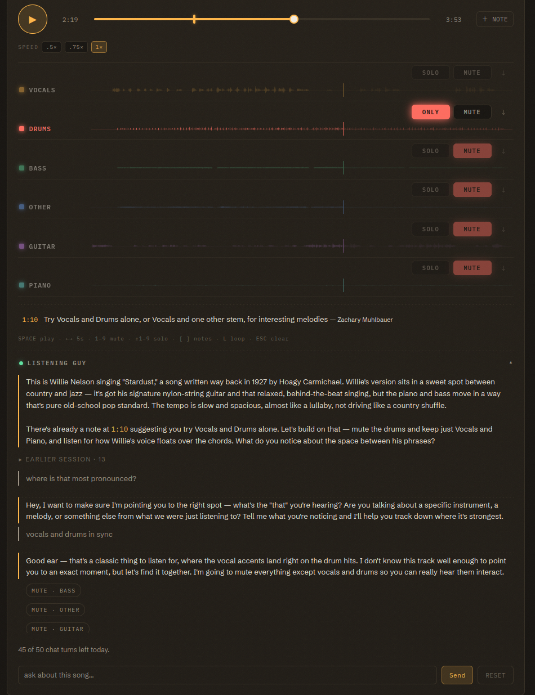

Use Cases
A listening exercise can develop across a course when students return to the same question with new recordings. These examples connect a mixer task to class discussion and evidence in timestamped notes.
The first case follows a demonstration from the CAIL Teaching Tools course. The other cases propose sequences for MSH 245: The American Musical Experience, a Lehman College survey course for students who may have no formal music background. Adapt the repertoire and pace to the recordings your class can access.
1. Vocals Against Drums

In the demonstrated class session, the instructor used a six-stem split of Willie Nelson's “Stardust.” At 1:10, the instructor pinned a note that asked students to hear vocals and drums alone, then compare vocals with another stem. To adapt the activity, prepare the split in a folder that allows class notes and reserve two Listening Guy turns per student. The model can read the pinned note without an added teaching instruction.
During the first ten minutes, students read the opening guide and try the mixer action in the note. The guide describes the recording through country and jazz conventions, including nylon-string guitar and behind-the-beat singing. Treat those descriptions as claims for students to check.
During the next ten minutes, students ask a question about how the voice and drums relate. In the demonstration, they asked where the parts sounded most in sync. Listening Guy muted bass, other, and guitar, then acknowledged that it could not identify an exact moment from the audio. Students use the remaining ten minutes to find a passage themselves, loop it, and pin a note with the time and what they heard.
Use [ and ] to visit the class's notes during discussion. Ask how the brush sounds relate to the singer's flexible timing, and try 0.75× if the group needs another listen. The model's mixer action gives students a starting point; their notes must supply the audible evidence.
2. Texture Across the Survey
A survey course can return to texture through unaccompanied ballads, congregational singing, jazz, and layered studio recordings. Prepare one folder per unit with section markers and use the texture instruction from the Instructor Console. Allow class notes when students need to explain their own examples.
In weeks one through three, ask students to hear whether voices follow one line or vary it together in ballads and congregational recordings. A split may place most of the sound in Vocals. Students should compare that stem with the full recording before deciding what the model separated.
In weeks four through six, use shape-note singing, gospel quartet, or parlor song to examine how parts support a melody. Mute the Melody gives students a comparison they can repeat. In weeks seven through ten, turn to New Orleans jazz and big-band recordings and ask which lines move independently. Horns may share the Other stem, even in a six-stem split, so students may need to follow several lines within one track.
In weeks eleven through fourteen, use Motown, funk, or hip-hop to examine layered production. Students mute a stem, restore it, and describe its role in relation to the remaining mix. For a final task, they choose a recording for each texture type, pin notes that support the labels, and explain where Listening Guy's description differed from their own listening.
Watch for students who treat the number of instruments as the definition of polyphony. Ask them to follow an independent bass line and explain how it relates to the melody. A course label such as “horns” or “front line” can help the class discuss Other, provided everyone first checks what that stem contains.
3. Genre by Instrumentation
Choose pairs of recordings that share a song or tempo but use different ensembles. A Delta blues performance and a Chicago electric-band version, for example, give students concrete sounds to compare. The task asks them to support a genre claim with instruments, tempo, and feel.
Ask Listening Guy to name instruments it would expect in a genre and have students confirm them through the mixer. Reserve up to three turns per pair. During the first week, students complete One Stem at a Time on both recordings and make an instrument inventory. During the second week, they ask the model how the performances differ and solo the parts it names. During the third week, they pin a note on each recording that states a genre claim and explains two audible details.
Repeat the method with a new pair in each unit, then ask students to describe an unfamiliar recording in the final task. Older recordings may yield noisy vocals or a nearly empty drum stem. Those results can reflect the source audio or the model's limits. Students should check the full mix before they infer that an instrument is absent, and treat the model's genre knowledge as something to test against each performance.
4. Mapping Form in a Shared Folder
Use a unit on 12-bar blues, AABA, or verse-chorus form to build a class map of each recording. Put one four-stem split per group in a folder that lets class members add notes. Groups of three or four can share responsibility for checking a boundary. A teaching instruction can ask Listening Guy to describe changes in drums or bass when students ask about form.
During the first week, groups complete Find the Form and label section boundaries. During the second week, they rotate to another recording, read the existing notes, and add disagreements with reasons. In the third week, lead a live session through the disputed passages. Solo the parts students cite and ask whether the proposed boundary matches the sound.
Each note shows its author, so the shared recording lets you inspect both the proposed map and the reasons students give. Try the bass at 0.75× when a group needs to count a 12-bar passage. The class can revisit the annotated folder while the recordings remain within their retention period.
5. Instructor-Led Listening in a Large Section
A large section can hear the same passage through headphones while the instructor leads the mixer. Prepare a course split in a shared folder and pin notes at each discussion point. Read-only access suits the live demonstration; enable class notes if students will complete Ask, Then Verify on that recording afterward.
Before class, the instructor opens the course recording and presses Start shared session. Students open that recording and press Follow instructor. During class, pause at a pinned note, solo the relevant part, and ask a question. Give followers a few seconds to reach the passage before you play again. If a browser blocks audio, students can press Join shared audio.
Ask students to keep the app visible because a hidden tab pauses a follower's audio. They can still apply their own mute switches during the session. After class, they leave the session and replay the passage independently before they complete the verification task. A session for each unit can give students a set of annotated recordings to revisit before those files expire.
Developing a Course Sequence
Prepared recordings let students begin without spending a split run. A useful pinned note gives them a sound to check and a mixer action to try. Pair a question to Listening Guy with evidence students gather themselves, then ask them to explain how the two accounts relate.
Keep the course policy visible as students move from private practice to course work. Students use Share with to choose where a new split belongs and acknowledge what the instructor can review. They can keep personal experiments under Personal. Instructors choose a course folder's sharing permission when classmates need access.
Additional Resources
Sample Activities gives the shorter exercises used in these sequences. The Instructor Console explains how to save teaching instructions. For the Lab's parallel guide to its Sandbox, see Sandbox Docs.